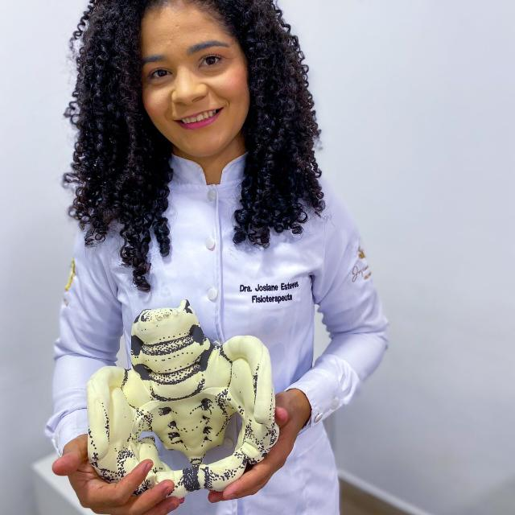

Sobre Mim

Olá, sou a Dra. Josiane Esteves, uma apaixonada pela área da saúde e bem-estar. Minha trajetória na fisioterapia pélvica começou com uma curiosidade inabalável sobre o funcionamento do corpo humano e o desejo de ajudar as pessoas a viverem com mais qualidade.
Nasci e cresci em uma pequena cidade no interior. Desde criança, sempre fui fascinada pelo corpo humano e suas complexidades. Quando chegou a hora de escolher uma carreira, a fisioterapia me chamou a atenção. Afinal, o que poderia ser mais gratificante do que ajudar pacientes a recuperar sua saúde e qualidade de vida?
Durante a faculdade de fisioterapia, tive a oportunidade de explorar diferentes áreas. No entanto, foi a fisioterapia pélvica que realmente me cativou. O assoalho pélvico, esse conjunto de músculos e ligamentos que sustentam órgãos vitais como a bexiga, o útero e o intestino, tornou-se meu foco.
Minha jornada profissional foi repleta de desafios. Aprendi a lidar com pacientes de todas as idades, homens, mulheres e crianças, que enfrentavam disfunções urinárias, incontinência, dor pélvica e outras questões delicadas. Cada caso era único, e eu estava determinada a encontrar soluções personalizadas.
Na minha prática diária, utilizei diversas técnicas para tratar os pacientes:
Biofeedback do Assoalho Pélvico: Ensinei meus pacientes a reconhecer e fortalecer os músculos do assoalho pélvico por meio dessa técnica.
Estimulação Elétrica: Utilizei dispositivos para estimular os músculos e melhorar a função pélvica.
Exercícios Terapêuticos: Desenvolvi programas de exercícios específicos para cada paciente.
Contribuindo para a Comunidade: Além do atendimento clínico, participei de eventos, palestras e workshops para conscientizar a comunidade sobre a importância da saúde pélvica. Também fiz parte da Associação Brasileira de Fisioterapia Pélvica, contribuindo para o desenvolvimento dessa área no país.
Minha jornada como fisioterapeuta pélvica tem sido recompensadora. Ver meus pacientes recuperando sua qualidade de vida e confiança é o que me motiva todos os dias. Acredito que a fisioterapia pélvica é uma área que ainda tem muito a oferecer, e estou ansiosa para continuar aprendendo e ajudando mais pessoas ao longo do caminho.